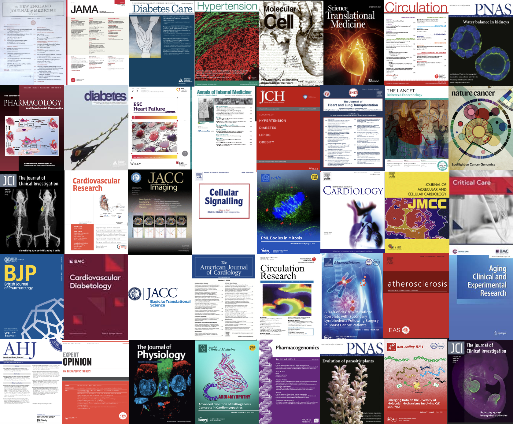

Publications
Recently Accepted Papers
-
SGLT2 inhibitors but not other antidiabetic drugs improve frailty in older adults with diabetes and HFpEF.
Pasquale Mone, Marco Ferrone, Francesco Spione, Dimitris Christodoulakis, Francesco Melillo, Antonio Rainone, Domenico Ponticelli, Tullio Tesorio, Marco Di Mauro, Anna Marro, Gaetano Macina, Maria Morgante, Germano Guerra, Gaetano Santulli
CARDIOVASCULAR RESEARCH. 2026. In press. -
TimeVault turns vault particles into molecular memory of transcriptional states: how to decode the cellular black box.
Gaetano Santulli
CELL CYCLE. 2026. In press.
Selection of Covers of our Best Papers
Loading publications..
Page Visits: 0